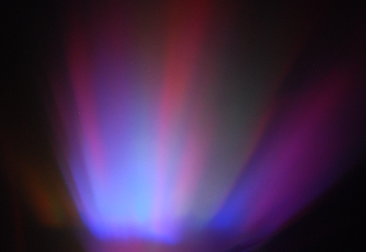
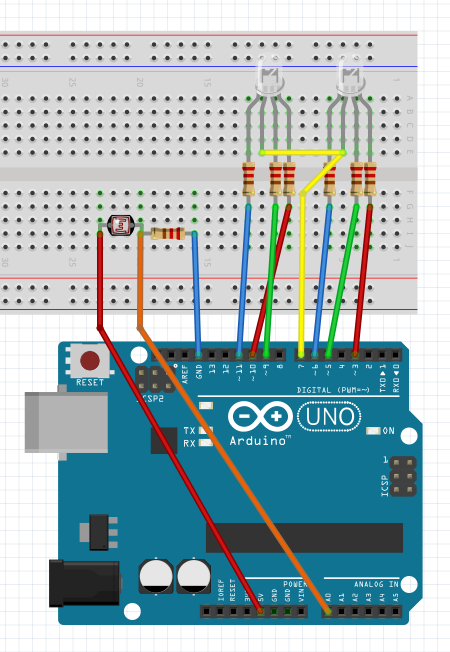
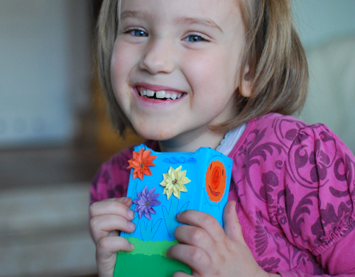

Aurora lamp based on Arduino
I had this idea in mind for a while, but it took me some time to acually do it. My child likes when there is some light in the room. I was thinking about building something which not only will provide light, but will be pretty and fun to watch. The other requirement was to make it automatically switch on when the lights go off. In theory this supposed to take some pressure of that moment. This part was only my wishful thinking. Here is a picture of the projection the lamp makes on the wall. It is not as bright, I needed to use long exposure time.

Parts
- Arduino board
- 2 x RGB LEDs
- 6 x 200 Ohms resistors (I should use a different resistance per each color)
- light sensor
- 10kOhm resistor
- a box (i.e. package for iPhone 3GS)
- piece of plastic - old credit/gift card
- kitchen foil, or anything which will reflect the light
- software - https://github.com/zalun/AuroraLamp

Assembly
There was no need for glue - board and parts fit in the box perfectly.

A window is needed to reflect the light on the wall.

Some decoration made by my daughter made it a usable product.

Tinkering
If you want - just upload the software and all should be fine. But it is designed to make some changes.
Lamp switches on when the ambient light level is below the value of BRIGHT
const int BRIGHT = 5;
Speed of the calculations is defined in STEP in milliseconds
const int STEP = 5;